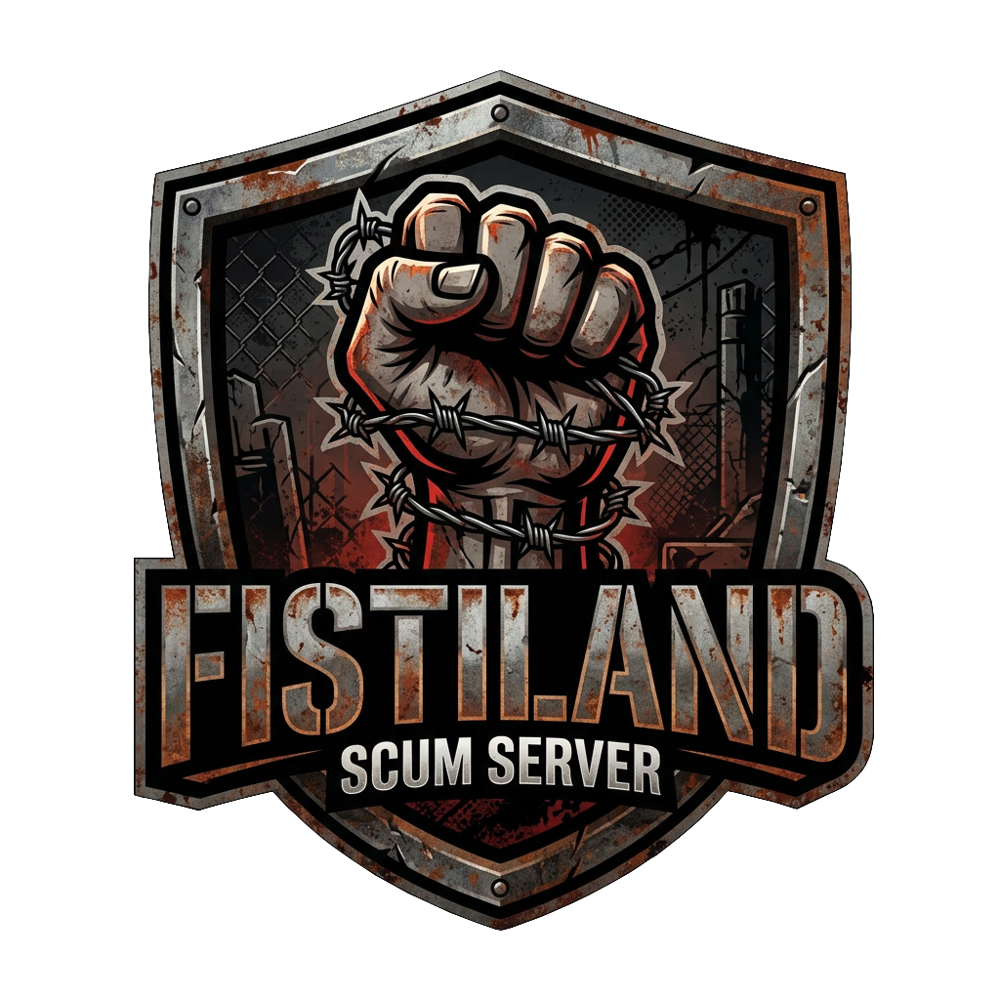
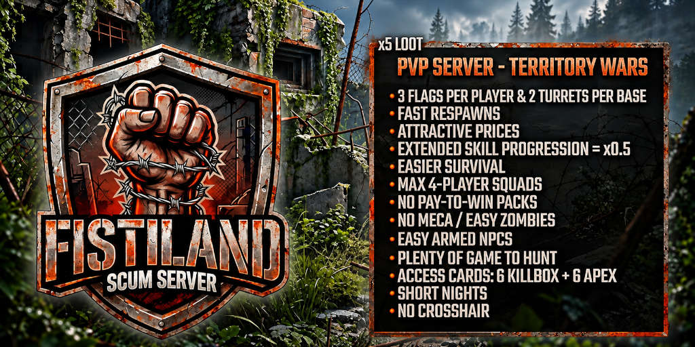

Territory wars
3 flags per player and 2 turrets per base. Take ground, hold it, lose it.

EU · PvP · Territory Wars · Loot x5
Hold zones, defend your base, fight over cargo drops. A community server where survival is easier and the fight is the point.
Join the Discord3 flags per player and 2 turrets per base. Take ground, hold it, lose it.
Fast respawns, attractive trader prices, extended skill progression (x0.5) and squads of 4 players max.
Easier survival, short nights, easy zombies and easy armed NPCs, with plenty of game to hunt.
No mechs on the map. The fights stay between players.
6 Killbox and 6 Apex access cards available at the same time.
No pay-to-win packs and no crosshair.
Search for FISTILAND in the SCUM server list, or come say hello on Discord for news, rules and squad searches.
